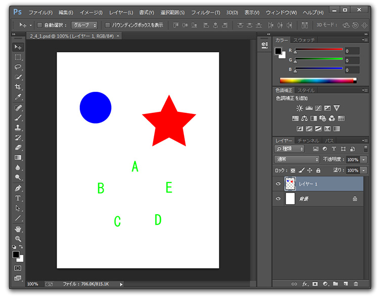
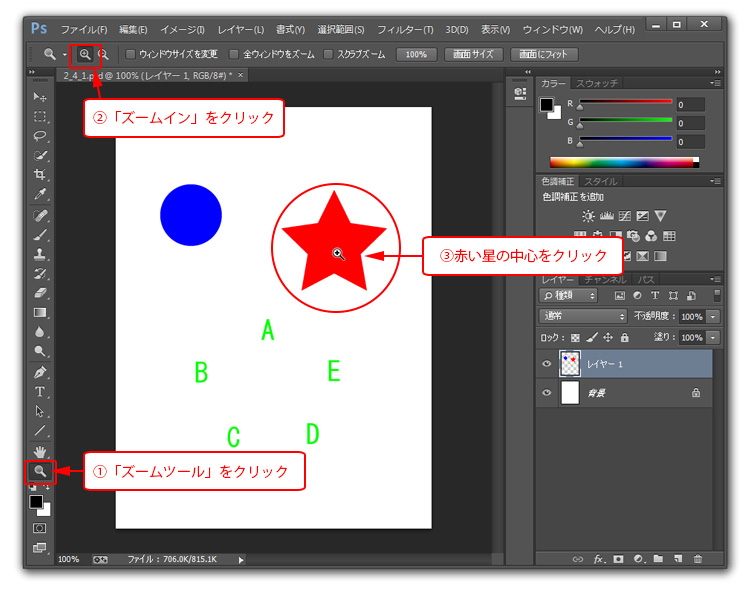
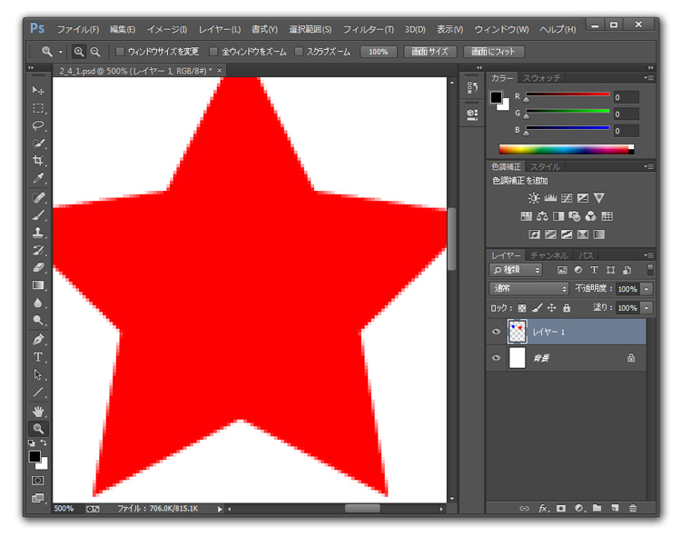
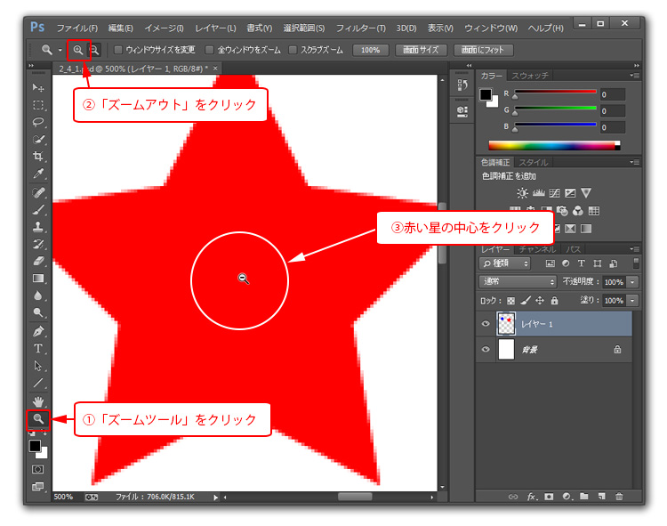

第2章 設定と基本操作
第4節 画面操作
本項では、画面を拡大・縮小したり画面内を移動する際の操作方法を学習します。
第1項 ズームツールの使用
この項で学習する内容
- [ズームツール]を使って画像を拡大・縮小表示させる方法を習得する。
この項で学ぶ[ズームツール]は画面を拡大表示したり縮小表示する際に使用します。
細かい作業が必要な場合は細部を大きく拡大し、全体を見たい場合は縮小表示をするなどして
状況に応じた画面表示に変更できるよう学習しましょう。
ズームツールを使用します
あらかじめダウンロードしておいた素材フォルダ「PS02」から2_4_1.psdを開きます。

ファイルが開いたら[ツールパネル]の[ズームツール]を選択し、
拡大表示をしたい場合は「コントロールパネル」の設定を「ズームイン」に変更します。
そのあと拡大したい部分をクリックすると拡大表示できます。
何度もクリックすることで、さらに拡大表示することができます。

赤い星を画面いっぱいに拡大表示しましょう。

縮小表示をしたい場合は「コントロールパネル」の設定を「ズームアウト」に変更するか
キーボードの【Altキー】（Macは〔Optionキー〕）を押しながら、
写真をクリックすると画像が縮小表示されます。

拡大表示同様、何度もクリックすることでさらに縮小することができます。
拡大した画面表示を全体が表示されるように操作しましょう。
ズームツールのショートカット
キーボードの【Ctrl＋＋（プラス）キー】
（Macは〔Command＋＋（プラス）キー〕）で拡大表示が、
【Ctrl】＋−（マイナス）キー】
（Macは〔Command＋−（マイナス）キー〕）で縮小表示ができます。
ショートカット操作はIllustratorと同じです。
使用頻度の高い機能なので、ぜひショートカットを覚えましょう。
また、[ズームツール]アイコンをダブルクリックすることで画面の表示倍率が100%になります。ズームインしすぎて画像の現在地を見失った場合には、このショートカット操作を利用しましょう。
この項のまとめ
- 画像の拡大・縮小表示
- ・[ズームツール]を選択し、[コントロールパネル]の「ズームイン」を選んだ状態で、画像内をクリックすると拡大表示する。
・キーボードの【Ctrl＋＋（プラス）キー】（Macは〔Command＋＋（プラス）キー〕）でも拡大表示。
・[ズームツール]を選択し、[コントロールパネル]の「ズームアウト」を選ぶか、【Altキー】（Macは〔Optionキー〕）を押しながら画像内をクリックすると縮小表示する。
・【Ctrl】＋−（マイナス）キー】（Macは〔Command＋−（マイナス）キー〕）でも縮小表示。
・[ズームツール]アイコンをダブルクリックすることで、画像の表示倍率が100%になる。
引き続きこのファイルを使用します。
ファイルは閉じずに次の項へ進んでください。